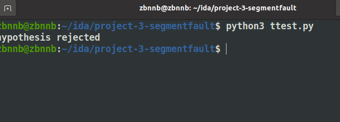

Loading...
Although the number of flights per day is generally on the rise. But people's willingness to travel is still affected by the number of new cases and deaths each day.
We used decision tree to test since we want to prove that there is a relationship between the daily new cases and deaths and people's willingness to take plane. The hypothesis assumes that the daily new cases and new deaths would influence people's willingness, but we don't know how it works, so we choose to use decision tree classifier here. (With both opensky and CDC data set).
We preprocess the data by reducing the outliers, fill the missing value with the mean or median. And since both data set is time series, we have to make sure the data we used for this hypothesis test should in the same time range. So we choose the data based on the CDC data set. When there are both records for today and tomorrow in opensky data sets, choose this CDC records and store the group id.
As for how we divided those data into groups
Here is the reports generated by the provided methods:
As we can see here, the sorce generated by those method tells us there do have a relation between people's mind about taking flights and daily new cases and deaths. However, those outputs also donate that the relation is so weak that only a small part of people would consider about the daily new cases and deaths when they are going to take plane.
So, our data do support this hypothesis, but the relationship between them is not completely assured.
As for t-test, we need to set a null hypothesis and set the significance standard alpha which will measure if the result meets the hypothesis or not.
Then we need to calculate the statistical values t(which measures if the average of a sample is quite different from the average of all) and we can get p_value by looking up in the table to compare p_value and the significance standard alpha
The average conf_cases in all states are 30,000.
This hypothesis mainly focus on the difference of the number of confirmed COVID-19 cases between states in America, because people have to know if different states have different panic situation to make sure if it is safe to take flights.
here is the result (p_value < significance alpha)
As for anova test, we need to set a null hypothesis and set the significance standard alpha which will measure if the result meets the hypothesis or not.
Then we need to calculate the statistical values ssb(difference between groups) and ssw(difference within group) and we can get f_value by calling statistic function to compare f_value and the significance standard alpha
There is no significant difference between covid-19 cases(including conf_cases, prob_cases).
This hypothesis mainly focus on the difference between confirmed COVID-19 cases and probable COVID-19 cases in America.
here is the result (f_value < significance alpha)